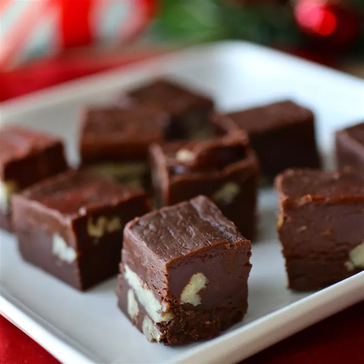

Creamy Chocolate Fudge

Description
A chocolate fudge recipe that is simple to make and is sure to satisfy everyone's sweet tooth!
Ingredients
- 1 1/2 cups white sugar
- 1 (7 ounce) jar marshmallow creme
- 2/3 cup evaporated milk
- 1/4 cup butter
- 1/4 teaspoon salt
- 2 cups milk chocolate chips
- 1 cup semisweet chocolate chips
- 1/2 cup chopped nuts
- 1 teaspoon vanilla extract
Directions
- Line an 8-inch square pan with aluminum foil; set aside.
- Combine sugar, marshmallow cream, evaporated milk, butter, and salt together in a large saucepan over medium heart; bring to a full boil and cook for 5 minutes, stirring constantly.
- Remove from heat and add milk chocolate chips and semisweet chocolate chips; stir until chocolate is melted and mixture is smooth. Stir in nuts and vanilla. Pour into prepared pan; chill in refrigerator for 2 hours, or until firm.